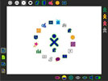

Projekt Ruanda
Mit Unterstuetzung von Sponsoren und Spenden konnte OLPC Deutschland e.V zusammen mit Child Care und Freiwilligen das Projekt Realisieren. Es wurden 30.000 Euro gesammelt und in ein eine Schule in XY gesteckt.
Details
Mit Unterstuetzung von Sponsoren und Spenden konnte OLPC Deutschland e.V zusammen mit Child Care und Freiwilligen das Projekt Realisieren. Es wurden 30.000 Euro gesammelt und in ein eine Schule in XY gesteckt.Das Projekt ist zur Zeit am laufen. Wir bekommen folgendes Feedback von lieben Oskar:
"Dear XZ, 10 batteries are broken and we recycle the laptops from six class to fours class next generation."
Uebersetzung ins Deutsche:"Hallo XZ, Zehn Akku sind kaputt und wir verwenden die Laptops der sechsten Klasse wieder in der vierten Klasse der naechsten Generation."
Kosten
Mit nur 30.000 Euro konnten dreu Schulklassen ueber Jahre mit Bildungsmaterial versorgt werden. Dabei verteilen sich die Kosten wie folgt:
- OLPC Laptops
- Das Herzstueck. Es wurden 100 Laptops von Boston nach xy verschickt. Die Laptops waren in der Generation 1B ohne weitere Ausstattung geliefert worden. Unterstuetzung gab es dabei von X und Y.
- Education Server
- Hierfuer kam ein Asus XYZ zum Einsatz. Der Schulserver dienst fuer die Verteilung des Schulmaterial an die Endgeraete. Die Kosten belaufen sich auf 2000 Euro.
- Ausbildung
- Lehrer koennen nicht ohne Ausbildung arbeiten. In einem Land wie Ruanda gibt es keine Ausbildungsform wie hierzulande. XY und ZY sind im Oktober 2010 nach Ruanda gereisst und haben sich fuenf Wochen Zeit genommen, um die Lehrer an den OLPCs auszubilden. Kosten 600 Euro.
- Elektroinstallation
- Laptops muessen mit Strom geladen werden. Von Land Badenwuertenberg als Partnerland wurde aus Entwicklungshilfe ein Zugang zum Stromnetz hergestellt. Mit unserer Hilfe (finanzziel und handwerklich vor Ort) wurden die Klassenzimmer mit Ladestationen versorgt.
- Elektroinstallation
- Laptops muessen mit Strom geladen werden. Von Land Badenwuertenberg als Partnerland wurde aus Entwicklungshilfe ein Zugang zum Stromnetz hergestellt. Mit unserer Hilfe (finanzziel und handwerklich vor Ort) wurden die Klassenzimmer mit Ladestationen versorgt. Kosten 500 Euro.